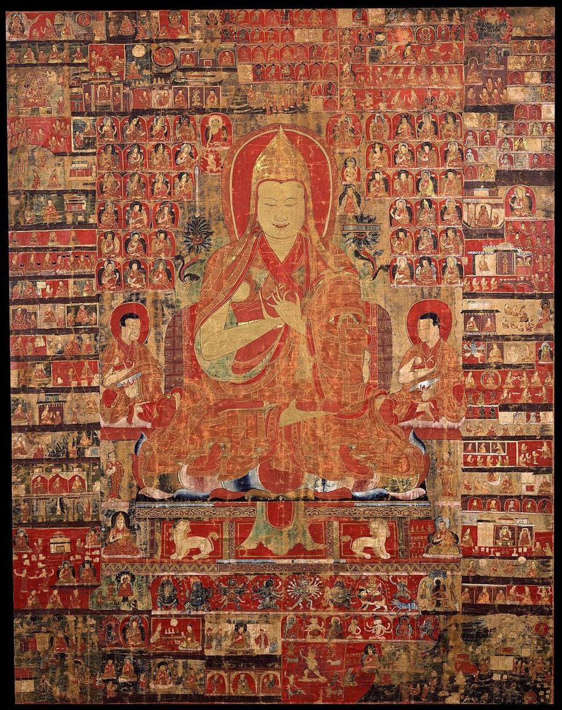
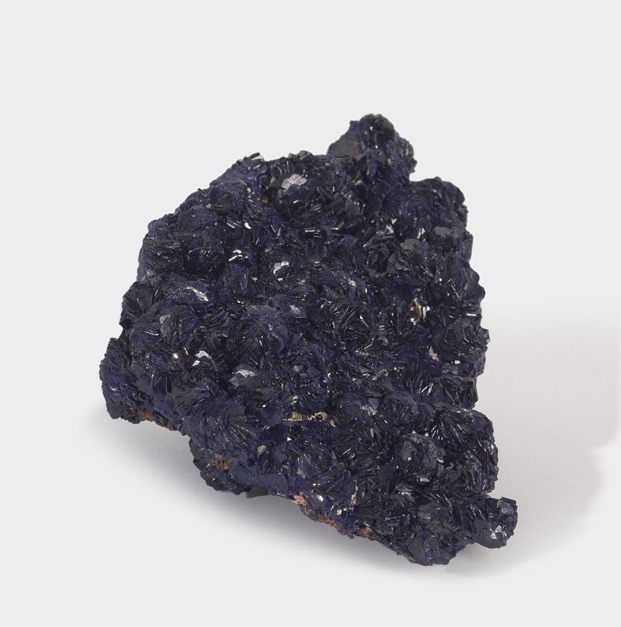
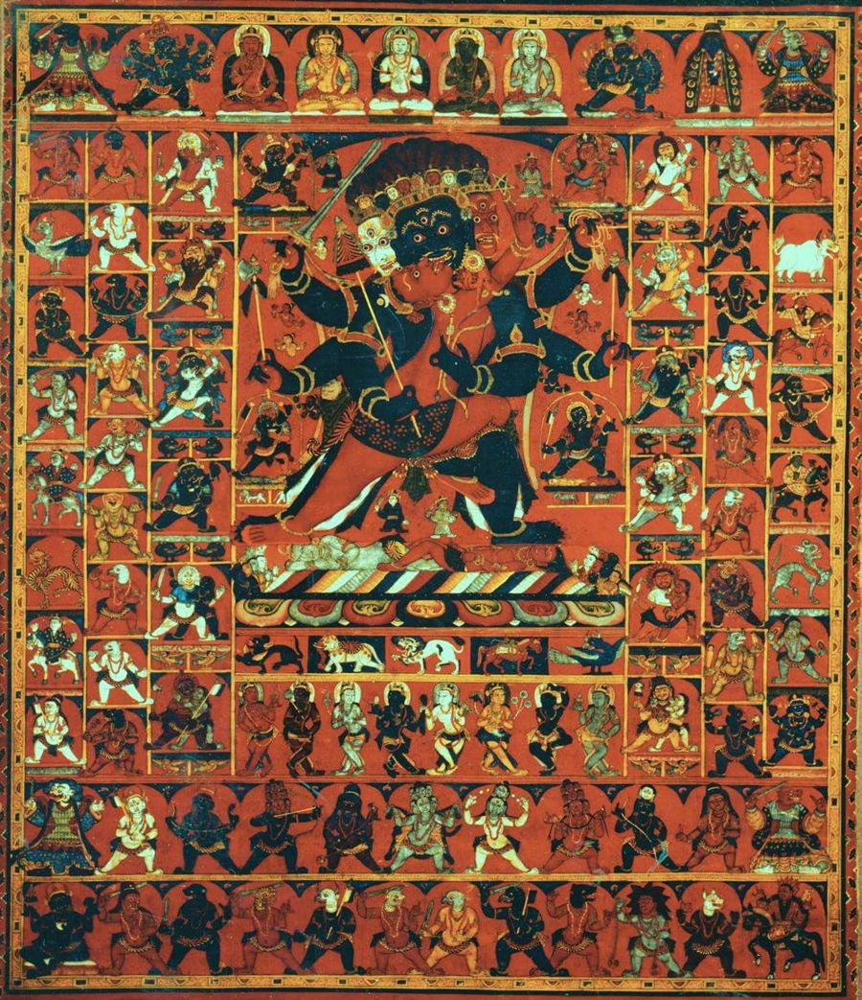

Thangka Colors Explained: The Natural Mineral Pigments Behind Himalayan Sacred Art
Stand in front of a well-made thangka and the first thing you notice is the color. The blues feel deep enough to fall into, the greens are cool and calm, and the reds glow even in a dim room. Those colors are not an accident of modern paint tubes. For centuries, Himalayan painters have ground their palette from stones, earths, plants, and precious metals, and the result is a kind of color that behaves differently from anything mixed in a factory.
This guide walks through the main traditional thangka pigments, how painters prepare them, what each color is used for, and how you can tell whether a painting in front of you was made with natural materials. Whether you are a collector, a meditation practitioner, or simply curious, understanding the palette will change the way you look at every scroll.
Why Pigment Matters in a Thangka
A thangka is not decoration first. In Tibetan Buddhist practice it is a support for meditation, and its colors follow strict iconographic rules. A deity's body color identifies who they are, a background color sets the mood of a pure land, and small details such as the color of a lotus seat or a halo carry meaning. Because the painting is meant to last for generations, painters traditionally chose materials that hold their color for a very long time.
Mineral pigments also have a physical quality that is hard to fake. Each particle is a tiny crystal, so light bounces off the surface with a soft sparkle. When you tilt a mineral-painted thangka under a lamp, the blues and greens shift slightly in depth. Flat synthetic paint simply does not do that.

The Core Mineral Palette
Azurite Blue
Azurite, a copper carbonate mineral, gives the classic thangka blue used for skies, water, hair, and the bodies of blue deities. Painters crush the stone, then wash and settle it to separate the particles by size. Coarse particles give a dark, saturated blue; fine particles give a paler sky tone. That is why one painting can hold several blues that all come from the same rock.
Malachite Green
Malachite is azurite's close relative and is often found beside it in the same copper deposits. It produces the rich green of hills, leaves, and the body of Green Tara. Like azurite, it is graded by grinding and washing, from deep forest green to soft jade.
Cinnabar and Vermilion Red
Cinnabar, a mercury sulfide, produces a brilliant warm red that has been prized across Asia for over a thousand years. It appears in robes, flames, and the bodies of red deities such as Amitabha. Because it contains mercury, careful studios handle it with protection and never sand a dry cinnabar surface.
Orpiment Yellow and Realgar Orange
Orpiment, an arsenic sulfide, gives a glowing lemon-gold yellow, while its cousin realgar gives orange. Both are historically important and both are toxic, so many modern workshops replace them with safer yellows. Ask your painter which yellow they use; a good studio will tell you openly.
Whites and Blacks
White usually comes from finely ground chalk, kaolin clay, or other white earths, and it is also the base of the gesso that coats the canvas. Black is made from soot or lamp black, sometimes in the form of solid ink cakes. Black outlines are drawn with a very fine brush at the end of the process to sharpen every form.
When you are comparing scrolls online, look for sellers who describe their materials in this much detail. Buy authentic thangka painting from a studio that can name its blue and its green, because that answer tells you more about quality than any product photo.
Plant Dyes and Organic Colors
Minerals provide the solid body of the palette, but plant and insect colors are just as important for shading. Indigo gives transparent blue washes that deepen the folds of robes and the shadows in clouds. Lac, a red from an insect resin, gives transparent crimson for subtle modeling of flesh and flowers. Some painters also use plant yellows for glazes.
These organic colors are applied in thin, layered washes. A master may build up a single shadow with dozens of strokes, each slightly darker than the last, until the transition looks like smoke. This technique, often called dry shading, is one of the clearest signs of a skilled hand.

Gold: The Final Light
Real gold is the most precious material on a thangka. Painters grind gold leaf into a fine powder, mix it with binder, and apply it to jewelry, halos, borders of robes, and sometimes entire backgrounds. Once dry, some areas are burnished with a smooth stone so they shine like metal, while others are left matte. Fine gold line work, drawn over painted cloth, is one of the most demanding steps of the whole process.
Imitation gold paint looks bright at first but often turns brassy or greenish with age. Genuine gold stays warm for centuries. If a painting is described as using 24K gold, ask whether it is real gold powder or gold-colored paint. We look at this subject in more depth in our article on gold line work and burnishing in thangka art.
How Painters Prepare Mineral Colors
Preparing mineral pigment is slow work, and that is part of why authentic paintings cost what they do. The typical steps look like this:
- Sorting the stone. The painter picks clean pieces of mineral and removes visible impurities.
- Grinding. The stone is crushed in a mortar and then ground with water for hours.
- Washing and grading. The ground mineral is stirred in water and allowed to settle. Heavier, coarser particles sink first, so the painter can pour off finer grades and collect several shades.
- Binding. Dry pigment is mixed with a warm animal-hide glue so it will hold to the gesso-prepared cotton.
- Testing. Each batch is tested on scrap canvas, because too much glue makes the paint crack and too little makes it powdery.
Once prepared, the colors are applied in a set order: background and large areas first, then figures, then shading, then gold, and finally the fine black outlines and the eyes. For the full sequence, from blank cotton to the finished scroll, see our step-by-step guide on how a thangka is made.
What the Colors Mean
Color in thangka art is a language. The five Buddha families, for example, are each linked with a color: white for Vairochana, blue for Akshobhya, yellow for Ratnasambhava, red for Amitabha, and green for Amoghasiddhi. A blue-bodied figure points to qualities such as stability and clarity, a red figure to compassion and discerning wisdom, and a green figure to swift, active help.
Because the body color is fixed by tradition, a painter cannot change it for taste. What the artist can control is the quality of the pigment, the evenness of the layers, and the subtlety of the shading. That is where you see the difference between an ordinary painting and a great one.
How to Tell Natural Pigments From Synthetic Paint
- Look at the surface in raking light. Mineral paint has a slight grain and a soft sparkle. Acrylic looks smooth and plastic.
- Check the blues and greens. Natural azurite and malachite have depth and slight variation. Synthetic blues are often flat and very uniform.
- Ask about the binder. Traditional studios use hide glue. Acrylic medium is a sign of a modern shortcut.
- Ask for close-up photos. A reputable seller will happily send macro shots of shading and gold work.
If you are ready to own a piece made the traditional way, choose a seller who explains the palette, the canvas preparation, and the painter's training. Buy authentic thangka painting only when those questions get clear, specific answers.

Frequently Asked Questions
Are mineral pigments safe to hang at home?
Yes. Once bound in glue and dry, the paint is stable. The risks of minerals such as cinnabar and orpiment matter during grinding, not when the finished painting hangs on a wall. Simply avoid touching or rubbing the painted surface.
Do natural pigments fade?
Mineral pigments are very lightfast, but organic dyes such as indigo and lac can fade in strong sunlight. Hang your thangka away from direct sun to keep its shading intact.
Why are mineral-pigment thangkas more expensive?
The raw materials cost more, preparation takes many hours, and the painter needs years of training to use them well. A large mineral and gold thangka can take months to finish.
Can a painting mix natural and modern colors?
Yes, and many contemporary studios do. The honest approach is to say so. Ask which colors are mineral and which are not.
Conclusion
The colors of a thangka are a quiet record of the land it came from: copper hills, river earths, plants, and gold. Learning to recognize azurite, malachite, cinnabar, and real gold helps you see why a traditional painting glows the way it does, and it gives you better questions to ask before you buy. Take your time, look closely, and let the palette guide you toward a piece that will hold its color for generations.